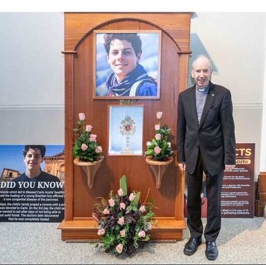
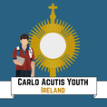

To arrange a visit of the Primary Relic to your parish, the Bishop of your diocese must make contact with Assisi to request the visitation of the relic.
|
Once approval has been granted by Assisi to your Bishop, we can then help with the arrangements of the visit. This includes the following:
|
 |
27th April 2025 Offical Carlo Acutis Ireland Canonisation celebration in Dublin
|
National Director of Carlo Acutis Ireland
Mary Ong, +44 7300 866 444 info@carloacutisireland.org Based in Belfast |

Directors of Carlo Acutis Youth Ireland
Mary-Aoife and Séamus Ong, +353 83 416 6687 youth@carloacutisireland.org Based in Dublin |